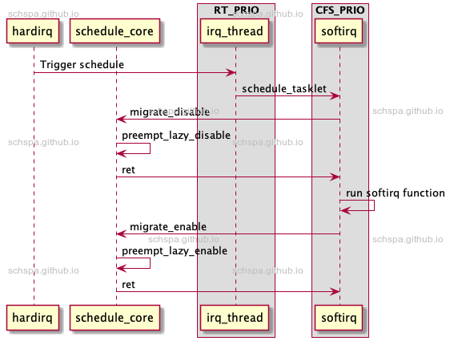

Bad migration disable in rt after change ksoftirqd priority
Table of Contents
发生概率
该问题多发于PREEMPT_RT，但是非RT版本同样有问题的存在， 一般一周多能复现一次
现象
[430340.880181] ------------[ cut here ]------------[430340.880595] WARNING: CPU: 3 PID: 21604 at kernel/sched/core.c:2485 set_task_cpu (kernel/sched/core.c:2490 (discriminator 3))[430340.881714] Modules linked in: isp_hw1(O) hobot_fb cfbfillrect cfbcopyarea bpu_cores bpu_fusa ecdh_generic ghash_generic loop can_bcm gcm hobot_can can_gw can_raw chacha_neon ecc ccm dh_generic hobot_can_stl ghash_ce libchacha sha3_generic crct10dif_ce gf128mul cpufreq_qos devfreq_qos cpuhp_qos hobot_ddr_stl_test hobot_rx_offload hobot_cpudai_jplus hobot_spi can lkof hobot_idu bpu_framework_j51 can_dev hobot_jpu hobot_vpu hobot_dma_jplus hobot_i2c hobot_videostitch hobot_mipihost pwm_hobot_lite5 hobot_mipidev isp(O) pwm_hobot_lite5_stl hobot_pym_jplus hobot_cim hobot_cim_dma hobot_mipidphy hobot_gdc ipv6 hobot_sensor hobot_camsys pwm_hobot5 hobot_vio_common pwm_hobot5_stl[430340.889767] CPU: 3 PID: 21604 Comm: cat Tainted: G O 5.10.59-rt52 #2[430340.890188] Hardware name: Horizon Robotics Journey 5 DVB (DT)[430340.890387] pstate: 20400009 (nzCv daif +PAN -UAO -TCO BTYPE=--)[430340.890761] pc : set_task_cpu (kernel/sched/core.c:2490 (discriminator 3))[430340.891116] lr : set_task_cpu (kernel/sched/core.c:2485 (discriminator 3))[430340.891438] sp : ffff800012453d30[430340.891595] pmr_save: 00000060[430340.891732] x29: ffff800012453d30 x28: ffff000181131d00[430340.892188] x27: 0000000000000000 x26: ffff800010a6ab5f[430340.892631] x25: ffff80026d9a6000 x24: 0000000000000007[430340.893043] x23: ffff00019abced30 x22: 0000000000000000[430340.893452] x21: ffff00027ee69a40 x20: 0000000000000003[430340.893860] x19: ffff00019abce580 x18: 0000000000000000[430340.894271] x17: 0000000000000000 x16: 0000000000000000[430340.894668] x15: fefefefefefefeff x14: 0000000000000000[430340.895074] x13: 0000000000000fe0 x12: 0000000000000000[430340.895474] x11: 0000000000000000 x10: 0000000000000001[430340.895864] x9 : 0000000000000000 x8 : 00000000000000e8[430340.896258] x7 : ffff00027eeb1a40 x6 : ffff00027eeb2540[430340.896662] x5 : ffff00027eeb1c80 x4 : 0000000000000007[430340.897033] x3 : ffff00027eeb22f8 x2 : 0000000000000000[430340.897390] x1 : 00000000000000ff x0 : 0000000000000002[430340.897766] Call trace:[430340.897935] set_task_cpu (kernel/sched/core.c:2490 (discriminator 3))[430340.898297] push_rt_task.part.0+0x144/0x184[430340.898698] push_rt_tasks (kernel/sched/rt.c:1979)[430340.899067] task_woken_rt (kernel/sched/rt.c:2277)[430340.899435] ttwu_do_wakeup (kernel/sched/sched.h:1270 kernel/sched/core.c:3010)[430340.899754] ttwu_do_activate (kernel/sched/core.c:3050)[430340.900085] try_to_wake_up (kernel/sched/core.c:3238 kernel/sched/core.c:3534)[430340.900424] wake_up_process (kernel/sched/core.c:3604)[430340.900759] __irq_wake_thread (kernel/irq/handle.c:135)[430340.901154] __handle_irq_event_percpu (kernel/irq/handle.c:178)[430340.901567] handle_irq_event_percpu (kernel/irq/handle.c:198 (discriminator 4))[430340.901973] handle_irq_event (kernel/irq/handle.c:221)[430340.902357] handle_fasteoi_irq (kernel/irq/chip.c:661 kernel/irq/chip.c:716)[430340.902703] generic_handle_irq (kernel/irq/irqdesc.c:652)[430340.903080] __handle_domain_irq (kernel/irq/irqdesc.c:708)[430340.903459] gic_handle_irq (./arch/arm64/include/asm/current.h:19 ./arch/arm64/include/asm/preempt.h:12 drivers/irqchip/irq-gic-v3.c:669 drivers/irqchip/irq-gic-v3.c:729)[430340.903852] el1_irq (arch/arm64/kernel/entry.S:675)[430340.904156] finish_task_switch (kernel/sched/core.c:4356)[430340.904494] __schedule (./arch/arm64/include/asm/mmu_context.h:236 kernel/sched/core.c:4426 kernel/sched/core.c:5191)[430340.904812] preempt_schedule_irq (./include/linux/sched.h:2016 (discriminator 1) kernel/sched/core.c:5494 (discriminator 1))[430340.905140] arm64_preempt_schedule_irq (arch/arm64/kernel/process.c:726)[430340.905488] el1_irq (arch/arm64/kernel/entry.S:675)[430340.905791] d_lookup_done (./include/linux/dcache.h:372)[430340.906131] __lookup_slow (fs/namei.c:1544)[430340.906456] walk_component (fs/namei.c:1857)[430340.906809] link_path_walk (fs/namei.c:2179)[430340.907163] path_lookupat.isra.0+0x50/0x114[430340.907526] filename_lookup (fs/namei.c:2362)[430340.907883] user_path_at_empty (fs/namei.c:2644)[430340.908255] vfs_statx (./include/linux/namei.h:59 fs/stat.c:193)[430340.908616] vfs_fstatat (fs/stat.c:217)[430340.908974] __do_sys_newfstatat (fs/stat.c:385)[430340.909356] __arm64_sys_newfstatat (fs/stat.c:378)[430340.909741] el0_svc_common.constprop.0+0x148/0x1e8[430340.910091] do_el0_svc (./arch/arm64/include/asm/atomic_lse.h:176 ./arch/arm64/include/asm/atomic.h:64 ./include/asm-generic/atomic-instrumented.h:1279 ./include/asm-generic/atomic-long.h:299 ./include/asm-generic/bitops/atomic.h:23 ./include/linux/thread_info.h:73 arch/arm64/kernel/syscall.c:179 arch/arm64/kernel/syscall.c:193)[430340.910388] el0_svc (arch/arm64/kernel/entry-common.c:354)[430340.910776] el0_sync_handler (arch/arm64/kernel/entry-common.c:407)[430340.911193] el0_sync (arch/arm64/kernel/entry.S:693)[430340.911510] ---[ end trace 0000000000000002 ]---[430342.366725] sched: RT throttling activated (curr: pid 126, comm tty)[430342.375790] ------------[ cut here ]------------[430342.376103] DEBUG_LOCKS_WARN_ON(current->softirq_disable_cnt != this_cpu_read(softirq_ctrl.cnt))[430342.376765] WARNING: CPU: 3 PID: 981 at kernel/softirq.c:204 __local_bh_enable (kernel/softirq.c:213 (discriminator 35))[430342.377742] Modules linked in: isp_hw1(O) hobot_fb cfbfillrect cfbcopyarea bpu_cores bpu_fusa ecdh_generic ghash_generic loop can_bcm gcm hobot_can can_gw can_raw chacha_neon ecc ccm dh_generic hobot_can_stl ghash_ce libchacha sha3_generic crct10dif_ce gf128mul cpufreq_qos devfreq_qos cpuhp_qos hobot_ddr_stl_test hobot_rx_offload hobot_cpudai_jplus hobot_spi can lkof hobot_idu bpu_framework_j51 can_dev hobot_jpu hobot_vpu hobot_dma_jplus hobot_i2c hobot_videostitch hobot_mipihost pwm_hobot_lite5 hobot_mipidev isp(O) pwm_hobot_lite5_stl hobot_pym_jplus hobot_cim hobot_cim_dma hobot_mipidphy hobot_gdc ipv6 hobot_sensor hobot_camsys pwm_hobot5 hobot_vio_common pwm_hobot5_stl[430342.386053] CPU: 3 PID: 981 Comm: irq/61-eth1 Tainted: G W O 5.10.59-rt52 #2[430342.386547] Hardware name: Horizon Robotics Journey 5 DVB (DT)[430342.386775] pstate: 60c00009 (nZCv daif +PAN +UAO -TCO BTYPE=--)[430342.387204] pc : __local_bh_enable (kernel/softirq.c:213 (discriminator 35))[430342.387628] lr : __local_bh_enable (kernel/softirq.c:213 (discriminator 35))[430342.388022] sp : ffff80001323bd40[430342.388241] pmr_save: 00000060[430342.388418] x29: ffff80001323bd40 x28: 0000000000000000[430342.389011] x27: 0000000000000001 x26: 0000000000000000[430342.389483] x25: ffff000180e4e2c8 x24: 0000000000000200[430342.389973] x23: 0000000000000200 x22: 0000000000000001[430342.390441] x21: ffff800011e1c000 x20: ffff800011505720[430342.390934] x19: 0000000000000000 x18: 000000010039e695[430342.391426] x17: 0000000000000000 x16: 000000000000003b[430342.391909] x15: ffffffffffffffff x14: ffff80001166ca88[430342.392405] x13: 000000000c824e6f x12: 000000000c824e90[430342.392894] x11: 000000000c824e20 x10: ffff80001166cab0[430342.393360] x9 : ffff800011b60e10 x8 : ffff80001166ca88[430342.393823] x7 : ffff80001323bb90 x6 : 00000001003a78ce[430342.394283] x5 : ffff00027ee63988 x4 : 00000001003a78ce[430342.394744] x3 : ffff800011ca1e28 x2 : 0000000100000000[430342.395203] x1 : 0000000000000000 x0 : 0000000000000000[430342.395669] Call trace:[430342.395883] __local_bh_enable (kernel/softirq.c:213 (discriminator 35))[430342.396292] __local_bh_enable_ip (kernel/softirq.c:265)[430342.396682] irq_forced_thread_fn (kernel/irq/manage.c:1086)[430342.397166] irq_thread (kernel/irq/manage.c:1143 kernel/irq/manage.c:1182)[430342.397610] kthread (kernel/kthread.c:296)[430342.398040] ret_from_fork (arch/arm64/kernel/entry.S:936)[430342.398469] ---[ end trace 0000000000000003 ]---[430343.867437] ------------[ cut here ]------------[430343.867803] WARNING: CPU: 3 PID: 981 at kernel/rcu/tree_plugin.h:297 rcu_note_context_switch (./arch/arm64/include/asm/current.h:19 (discriminator 9) kernel/rcu/tree_plugin.h:298 (discriminator 9))[430343.869095] Modules linked in: isp_hw1(O) hobot_fb cfbfillrect cfbcopyarea bpu_cores bpu_fusa ecdh_generic ghash_generic loop can_bcm gcm hobot_can can_gw can_raw chacha_neon ecc ccm dh_generic hobot_can_stl ghash_ce libchacha sha3_generic crct10dif_ce gf128mul cpufreq_qos devfreq_qos cpuhp_qos hobot_ddr_stl_test hobot_rx_offload hobot_cpudai_jplus hobot_spi can lkof hobot_idu bpu_framework_j51 can_dev hobot_jpu hobot_vpu hobot_dma_jplus hobot_i2c hobot_videostitch hobot_mipihost pwm_hobot_lite5 hobot_mipidev isp(O) pwm_hobot_lite5_stl hobot_pym_jplus hobot_cim hobot_cim_dma hobot_mipidphy hobot_gdc ipv6 hobot_sensor hobot_camsys pwm_hobot5 hobot_vio_common pwm_hobot5_stl[430343.877964] CPU: 3 PID: 981 Comm: irq/61-eth1 Tainted: G W O 5.10.59-rt52 #2[430343.878509] Hardware name: Horizon Robotics Journey 5 DVB (DT)[430343.878768] pstate: 20c00009 (nzCv daif +PAN +UAO -TCO BTYPE=--)[430343.879282] pc : rcu_note_context_switch (./arch/arm64/include/asm/current.h:19 (discriminator 9) kernel/rcu/tree_plugin.h:298 (discriminator 9))[430343.880068] lr : rcu_note_context_switch (kernel/rcu/tree_plugin.h:297)[430343.880802] sp : ffff80001323bd30[430343.880988] pmr_save: 00000060[430343.881156] x29: ffff80001323bd30 x28: 0000000000000000[430343.881700] x27: 0000000000000001 x26: 0000000000000000[430343.882248] x25: ffff000180e4e2c8 x24: ffff00019abce580[430343.882790] x23: ffff8000107d1ff8 x22: 0000000000000000[430343.883322] x21: ffff00019abce580 x20: ffff00027ee6a700[430343.883866] x19: ffff00019abce580 x18: 00000000000000e8[430343.884367] x17: 000000000000000e x16: 0000000000000007[430343.884838] x15: 0000000000000001 x14: 0000000000000019[430343.885300] x13: 0000000000000033 x12: 000000000000004c[430343.885757] x11: 0000000000000068 x10: ffff80001088cab8[430343.886221] x9 : 0000000000000010 x8 : 000000000000000a[430343.886668] x7 : 00000000d6d6a3e8 x6 : ffff80001203e514[430343.887126] x5 : ffff000180e4e300 x4 : ffff00019abce580[430343.887582] x3 : ffff000180e4e318 x2 : 0000000000208040[430343.888034] x1 : ffff8000107d1ff8 x0 : 0000000000000002[430343.888497] Call trace:[430343.888696] rcu_note_context_switch (./arch/arm64/include/asm/current.h:19 (discriminator 9) kernel/rcu/tree_plugin.h:298 (discriminator 9))[430343.889353] __schedule (kernel/sched/core.c:5111)[430343.889745] schedule (./include/asm-generic/bitops/non-atomic.h:106 (discriminator 1) ./include/linux/thread_info.h:97 (discriminator 1) ./include/linux/sched.h:2016 (discriminator 1) kernel/sched/core.c:5269 (discriminator 1))[430343.890110] irq_thread (kernel/irq/manage.c:1201)[430343.890806] kthread (kernel/kthread.c:296)[430343.891369] ret_from_fork (arch/arm64/kernel/entry.S:936)[430343.891743] ---[ end trace 0000000000000004 ]---[430346.038758] ------------[ cut here ]------------[430346.038779] WARNING: CPU: 3 PID: 33 at kernel/softirq.c:283 ksoftirqd_run_end (kernel/softirq.c:284 (discriminator 3))[430346.038810] Modules linked in: isp_hw1(O) hobot_fb cfbfillrect cfbcopyarea bpu_cores bpu_fusa ecdh_generic ghash_generic loop can_bcm gcm hobot_can can_gw can_raw chacha_neon ecc ccm dh_generic hobot_can_stl ghash_ce libchacha sha3_generic crct10dif_ce gf128mul cpufreq_qos devfreq_qos cpuhp_qos hobot_ddr_stl_test hobot_rx_offload hobot_cpudai_jplus hobot_spi can lkof hobot_idu bpu_framework_j51 can_dev hobot_jpu hobot_vpu hobot_dma_jplus hobot_i2c hobot_videostitch hobot_mipihost pwm_hobot_lite5 hobot_mipidev isp(O) pwm_hobot_lite5_stl hobot_pym_jplus hobot_cim hobot_cim_dma hobot_mipidphy hobot_gdc ipv6 hobot_sensor hobot_camsys pwm_hobot5 hobot_vio_common pwm_hobot5_stl[430346.038982] CPU: 3 PID: 33 Comm: ksoftirqd/3 Tainted: G W O 5.10.59-rt52 #2[430346.038992] Hardware name: Horizon Robotics Journey 5 DVB (DT)[430346.038998] pstate: 40c00009 (nZcv daif +PAN +UAO -TCO BTYPE=--)[430346.039007] pc : ksoftirqd_run_end (kernel/softirq.c:284 (discriminator 3))[430346.039014] lr : ksoftirqd_run_end (./arch/arm64/include/asm/preempt.h:12 kernel/softirq.c:283)[430346.039020] sp : ffff800012703e00[430346.039023] pmr_save: 00000060[430346.039026] x29: ffff800012703e00 x28: 0000000000000000[430346.039034] x27: 0000000000000000 x26: 0000000000000000[430346.039042] x25: ffff000180248948 x24: 0000000000000001[430346.039049] x23: ffff800011504000 x22: ffff800011504000[430346.039057] x21: ffff800011666cb0 x20: ffff000180276580[430346.039064] x19: ffff000180248580 x18: fffffe00065ea588[430346.039072] x17: 0000000000000000 x16: 0000000000000047[430346.039079] x15: 0000000000000001 x14: 3d9e9b78fd9d9b78[430346.039086] x13: 0a050101e0b8c264 x12: 0f15cc180a080101[430346.039093] x11: 00000000000000c0 x10: 0000000000000000[430346.039100] x9 : ffff8000116460f0 x8 : 0000000000000003[430346.039107] x7 : 00000000000000c6 x6 : 00000000000000c6[430346.039114] x5 : 0000094fddce9bb2 x4 : 00ffffffffffffff[430346.039122] x3 : 0000000000000000 x2 : 0000000000000000[430346.039129] x1 : 000000000000fe00 x0 : 000000000000fe00[430346.039138] Call trace:[430346.039143] ksoftirqd_run_end (kernel/softirq.c:284 (discriminator 3))[430346.039150] run_ksoftirqd (kernel/softirq.c:926)[430346.039156] smpboot_thread_fn (kernel/smpboot.c:32)[430346.039167] kthread (kernel/kthread.c:296)[430346.039178] ret_from_fork (arch/arm64/kernel/entry.S:936)[430346.039190] ---[ end trace 0000000000000005 ]---[430361.876908] rcu: INFO: rcu_preempt self-detected stall on CPU[430361.876934] rcu: 3-...!: (4085 ticks this GP) idle=83e/0/0x3 softirq=0/0 fqs=374[430361.876956] (t=5250 jiffies g=64439369 q=4388)[430361.876963] rcu: rcu_preempt kthread starved for 4128 jiffies! g64439369 f0x0 RCU_GP_WAIT_FQS(5) ->state=0x402 ->cpu=7[430361.876975] rcu: Unless rcu_preempt kthread gets sufficient CPU time, OOM is now expected behavior.[430361.876980] rcu: RCU grace-period kthread stack dump:[430361.876984] task:rcu_preempt state:I stack: 0 pid: 12 ppid: 2 flags:0x00000028[430361.877001] Call trace:[430361.877004] __switch_to (arch/arm64/kernel/process.c:583)[430361.877029] __schedule (./arch/arm64/include/asm/mmu_context.h:236 kernel/sched/core.c:4426 kernel/sched/core.c:5191)[430361.877042] schedule (./include/asm-generic/bitops/non-atomic.h:106 (discriminator 1) ./include/linux/thread_info.h:97 (discriminator 1) ./include/linux/sched.h:2016 (discriminator 1) kernel/sched/core.c:5269 (discriminator 1))[430361.877048] schedule_timeout (kernel/time/timer.c:1883)[430361.877059] rcu_gp_kthread (kernel/rcu/tree.c:1935 kernel/rcu/tree.c:2109)[430361.877072] kthread (kernel/kthread.c:296)[430361.877084] ret_from_fork (arch/arm64/kernel/entry.S:936)[430361.877102] NMI backtrace for cpu 3[430361.877111] CPU: 3 PID: 0 Comm: swapper/3 Tainted: G W O 5.10.59-rt52 #2[430361.877120] Hardware name: Horizon Robotics Journey 5 DVB (DT)[430361.877125] Call trace:[430361.877127] dump_backtrace (arch/arm64/kernel/stacktrace.c:142)[430361.877134] show_stack (arch/arm64/kernel/stacktrace.c:198)[430361.877141] dump_stack (lib/dump_stack.c:122)[430361.877151] nmi_cpu_backtrace (lib/nmi_backtrace.c:105)[430361.877163] nmi_trigger_cpumask_backtrace (lib/nmi_backtrace.c:62)[430361.877172] arch_trigger_cpumask_backtrace (arch/arm64/kernel/ipi_nmi.c:44)[430361.877183] rcu_dump_cpu_stacks (kernel/rcu/tree_stall.h:331)[430361.877190] rcu_sched_clock_irq (kernel/rcu/tree_stall.h:555 kernel/rcu/tree_stall.h:637 kernel/rcu/tree.c:3736 kernel/rcu/tree.c:2577)[430361.877199] update_process_times (kernel/time/timer.c:1721)[430361.877210] tick_sched_handle.isra.0+0x50/0x68[430361.877221] tick_sched_timer (kernel/time/tick-sched.c:1326)[430361.877228] __hrtimer_run_queues (kernel/time/hrtimer.c:1541 kernel/time/hrtimer.c:1601)[430361.877236] hrtimer_interrupt (kernel/time/hrtimer.c:1672)[430361.877244] arch_timer_handler_phys (drivers/clocksource/arm_arch_timer.c:666)[430361.877256] handle_percpu_devid_irq (kernel/irq/chip.c:943)[430361.877264] generic_handle_irq (kernel/irq/irqdesc.c:652)
问题分析
从log看，一脸懵，全部都是调度器的核心代码报出来的错误。无从下手。
表因分析
最开始出错的地方是set_task_cpu
void set_task_cpu(struct task_struct *p, unsigned int new_cpu){#ifdef CONFIG_SCHED_DEBUG/** We should never call set_task_cpu() on a blocked task,* ttwu() will sort out the placement.*/WARN_ON_ONCE(p->state != TASK_RUNNING && p->state != TASK_WAKING &&!p->on_rq);/** Migrating fair class task must have p->on_rq = TASK_ON_RQ_MIGRATING,* because schedstat_wait_{start,end} rebase migrating task's wait_start* time relying on p->on_rq.*/WARN_ON_ONCE(p->state == TASK_RUNNING &&p->sched_class == &fair_sched_class &&(p->on_rq && !task_on_rq_migrating(p)));#ifdef CONFIG_LOCKDEP/** The caller should hold either p->pi_lock or rq->lock, when changing* a task's CPU. ->pi_lock for waking tasks, rq->lock for runnable tasks.** sched_move_task() holds both and thus holding either pins the cgroup,* see task_group().** Furthermore, all task_rq users should acquire both locks, see* task_rq_lock().*/WARN_ON_ONCE(debug_locks && !(lockdep_is_held(&p->pi_lock) ||lockdep_is_held(&task_rq(p)->lock)));#endif/** Clearly, migrating tasks to offline CPUs is a fairly daft thing.*/WARN_ON_ONCE(!cpu_online(new_cpu));WARN_ON_ONCE(is_migration_disabled(p));#endiftrace_sched_migrate_task(p, new_cpu);if (task_cpu(p) != new_cpu) {if (p->sched_class->migrate_task_rq)p->sched_class->migrate_task_rq(p, new_cpu);p->se.nr_migrations++;rseq_migrate(p);perf_event_task_migrate(p);}__set_task_cpu(p, new_cpu);}
直接原因在WARN_ON_ONCE(is_migration_disabled(p));这一句上边.
结合汇编代码，以及寄存器信息来看
kernel/sched/core.c:2483 WARN_ON_ONCE(!cpu_online(new_cpu));0xffff800010054a5c <+116>: cbnz w0, 0xffff800010054a64 <set_task_cpu+124>0xffff800010054a60 <+120>: brk #0x80024842485 WARN_ON_ONCE(is_migration_disabled(p));0xffff800010054a64 <+124>: ldrh w0, [x19, #768]0xffff800010054a68 <+128>: cbz w0, 0xffff800010054a70 <set_task_cpu+136>0xffff800010054a6c <+132>: brk #0x800p->migration_disabled = 0x0000000000000002; // w0
很容易可以分析出来migration_disabled的值是2, 这个值看起来不像是被别人踩到了， 并且几次复现的现场中，这个值都是2.
从代码很容易得出结论，报出问题的根本原因是进程已经停用了抢占，但是在CPU热插拔 时，调度器依旧在尝试将这个任务迁移到其他CPU上边去。
这个线程是哪个？
从汇编代码中，可以看到task_struct的地址在x19, i.e. ffff00019abce580. 在代码中搜索此地址
[430343.867437] ------------[ cut here ]------------[430343.867803] WARNING: CPU: 3 PID: 981 at kernel/rcu/tree_plugin.h:297 rcu_note_context_switch+0x3c/0x2ac[430343.869095] Modules linked in: isp_hw1(O) hobot_fb cfbfillrect cfbcopyarea bpu_cores bpu_fusa ecdh_generic ghash_generic loop can_bcm gcm hobot_can can_gw can_raw chacha_neon ecc ccm dh_generic hobot_can_stl ghash_ce libchacha sha3_generic crct10dif_ce gf128mul cpufreq_qos devfreq_qos cpuhp_qos hobot_ddr_stl_test hobot_rx_offload hobot_cpudai_jplus hobot_spi can lkof hobot_idu bpu_framework_j51 can_dev hobot_jpu hobot_vpu hobot_dma_jplus hobot_i2c hobot_videostitch hobot_mipihost pwm_hobot_lite5 hobot_mipidev isp(O) pwm_hobot_lite5_stl hobot_pym_jplus hobot_cim hobot_cim_dma hobot_mipidphy hobot_gdc ipv6 hobot_sensor hobot_camsys pwm_hobot5 hobot_vio_common pwm_hobot5_stl[430343.877964] CPU: 3 PID: 981 Comm: irq/61-eth1 Tainted: G W O 5.10.59-rt52 #2[430343.878509] Hardware name: Horizon Robotics Journey 5 DVB (DT)[430343.878768] pstate: 20c00009 (nzCv daif +PAN +UAO -TCO BTYPE=--)[430343.879282] pc : rcu_note_context_switch+0x3c/0x2ac[430343.880068] lr : rcu_note_context_switch+0x28/0x2ac[430343.880802] sp : ffff80001323bd30[430343.880988] pmr_save: 00000060[430343.881156] x29: ffff80001323bd30 x28: 0000000000000000[430343.881700] x27: 0000000000000001 x26: 0000000000000000[430343.882248] x25: ffff000180e4e2c8 x24: ffff00019abce580[430343.882790] x23: ffff8000107d1ff8 x22: 0000000000000000[430343.883322] x21: ffff00019abce580 x20: ffff00027ee6a700[430343.883866] x19: ffff00019abce580 x18: 00000000000000e8[430343.884367] x17: 000000000000000e x16: 0000000000000007[430343.884838] x15: 0000000000000001 x14: 0000000000000019[430343.885300] x13: 0000000000000033 x12: 000000000000004c[430343.885757] x11: 0000000000000068 x10: ffff80001088cab8[430343.886221] x9 : 0000000000000010 x8 : 000000000000000a[430343.886668] x7 : 00000000d6d6a3e8 x6 : ffff80001203e514[430343.887126] x5 : ffff000180e4e300 x4 : ffff00019abce580[430343.887582] x3 : ffff000180e4e318 x2 : 0000000000208040[430343.888034] x1 : ffff8000107d1ff8 x0 : 0000000000000002[430343.888497] Call trace:[430343.888696] rcu_note_context_switch+0x3c/0x2ac[430343.889353] __schedule+0xf4/0x5c0[430343.889745] schedule+0x7c/0xcc[430343.890110] irq_thread+0x16c/0x1b4[430343.890806] kthread+0x114/0x124[430343.891369] ret_from_fork+0x10/0x30[430343.891743] ---[ end trace 0000000000000004 ]---[430346.038758] ------------[ cut here ]------------
再加上简单的分析，可知task_strut就是 irq/61-eth1
kernel/rcu/tree_plugin.h:292 struct rcu_data *rdp = this_cpu_ptr(&rcu_data);0xffff8000100962ac <+36>: add x20, x20, x0293 struct rcu_node *rnp;294295 trace_rcu_utilization(TPS("Start context switch"));296 lockdep_assert_irqs_disabled();297 WARN_ON_ONCE(!preempt && rcu_preempt_depth() > 0);0xffff8000100962b0 <+40>: cbnz w22, 0xffff8000100962c4 <rcu_note_context_switch+60>0xffff8000100962b4 <+44>: ldr w0, [x21, #772]0xffff8000100962b8 <+48>: cmp w0, #0x00xffff8000100962bc <+52>: b.le 0xffff8000100962c4 <rcu_note_context_switch+60>0xffff8000100962c0 <+56>: brk #0x800./arch/arm64/include/asm/current.h:19 asm ("mrs %0, sp_el0" : "=r" (sp_el0));0xffff8000100962c4 <+60>: mrs x0, sp_el0kernel/rcu/tree_plugin.h:[20220515_09:52:33][430343.883322] x21: ffff00019abce580 x20: ffff00027ee6a700x21: is current, and thread is irq/61-eth1(gdb) p /d &((struct task_struct *)0)->rcu_read_lock_nesting$5 = 772and rcu_read_lock_nesting = 2 too.
rcu_read_lock_nesting = 2, 确实是在持锁的状态下发生了迁移，这个也是不应该发生的。
深入分析
分析完表面原因就更蒙了，这是踩到了什么世纪大坑了，怎么会发生这种不可能发生的 事情。问题要想继续分析就只能去深入的去看代码了。
场景分析
在出现的几次log中，发现很多情况下，问题复现都是在发送，接收网络报文附近。因此 softirq会是个比较强的怀疑方向
migration_disable原理分析
首先需要去看一看migration_disable是什么： Migration disable for the mainline
简单来说，就是为了实时性，Linux系统一直在致力于去除/缩小禁止抢占的临界区，但 是对于per cpu的访问又需要响应的保护措施，通过禁用迁移，可以保证per cpu资源的 访问，又不至于将抢占禁用掉。
内核的这个机制应该是没什么大问题（否则也不会提交上去），那问题就出在有地方在 禁止抢占的情况下，仍旧出现了抢占.
内核代码分析
要分析这个问题，首先要搞清楚softirq上下文中对migration_disabled的处理方法 首先要注意，我们的场景是在CONFIG_PREEMPT_RT打开的情况下出现的
softirq context in PREEMPT_RT
在PREEMPT_RT内核中，软中断作为普通的上下文来运行，大部份工作都会被推到 ksoftirqd的线程中运行（非RT版本中只有在softirq任务过多，执行超时等少数情况 下才会发生这个动作）。

migrate_disable in PREEMPT_RT
void migrate_disable(void){struct task_struct *p = current;if (p->migration_disabled) {p->migration_disabled++;return;}trace_sched_migrate_disable_tp(p);preempt_disable();this_rq()->nr_pinned++;p->migration_disabled = 1;preempt_lazy_disable();preempt_enable();}EXPORT_SYMBOL_GPL(migrate_disable);
如上面的代码所示，RT版本的migrate_disable使用了preempt_lazy_disable，目的是 为了禁用CFS调度器的抢占。
看到这里，就是问题的关键了，为什么这里需要禁用抢占？
softirq为何需要禁用抢占？
这个还是要看softirq的实现.
对于Linux，softirq是介于hardirq，以及process context的一种折衷方案，具备比 普通进程更高的优先级，并且允许被中断抢占.
对于RT和non-RT，就产生了不同的影响
对于non-RT系统
softirq可以运行在以下两种情况下
- 运行在中断处理结束之后，这个场景中，CPU还不会运行任何调度器相关的代码， 自然也就不可能被普通进程抢占，
- 运行在ksoftirq中：在这个场景中,系统会在运行前关闭掉bh的抢占.
对于RT系统
irq，softirq都运行在进程上下文中，不同之处就在于
- irq线程为RT线程，并且调度策略是SCHED_FIFO
- softirq为CFS线程，可以被irq线程抢占，为了实现softirq不被CFS进程抢占，由 此引入了preempt_lazy_disable()。注：关闭CFS的抢占，并不意味着softirq线 程优先级较高，只是中途不能被CFS线程抢占，softirq调度的优先级仍旧不变.
我们系统上的修改
由于softirq的优先级变为了CFS，并且默认为120的优先级，导致使用到 softirq/tasklet的驱动性能下降，为了弥补这个下降，部分同事将ksoftirq线程优先 级调整到了RT 45的优先级，这就导致了在运行时，bh_disable的功能失效。
Process ksoftirqd/xspin_lock_bh()local_bh_disable()local_lock(&softirq_ctrl.lock)migrate_disable();preempt_lazy_disable();/* CFS process can't preempt our task */softirq_ctrl.cnt += 0x200current->softirq_disable_cnt = softirq_ctrl.cntspin_unlock_bh()local_bh_enable()__local_bh_enable_ip()if preempt_on:__local_bh_enablesoftirq_ctrl.cnt -= 0x100current->softirq_disable_cnt = softirq_ctrl.cnt/* softirq_ctrl.cnt is not zero, so won't CFS preempt */__do_softirq();/*** Run softirq handler<<preempted by ksoftirqd>>*/__local_bh_enablesoftirq_ctrl.cnt -= 0x100run_ksoftirqd()ksoftirqd_run_start__local_bh_disable_ip();softirq_ctrl.cnt += 0x100run softirq handler<< switched out >>current->softirq_disable_cnt = softirq_ctrl.cnt/* softirq_ctrl.cnt is zero, so won't CFS preempt */migrate_enable();preempt_lazy_enable();/* CFS process can't preempt our task */ksoftirqd_run_end__local_bh_enablesoftirq_ctrl.cnt -= 0x100
如上场景，当bh_disable失效时，会导致全局的变量softirq_ctrl.cnt计数出错，进 而导致问题的发生.
需要注意：
- 以上场景针对的场景中，Process 和ksoftirqd/x运行在同一个cpu上，这个场景下， softirq_ctrl.cnt才是同一个变量
- local_bh_disable()会加加两倍的SOFTIRQ_OFFSET，而普通的ksoftirq运行时之后 加SOFTIRQ_OFFSET
fix
解决这个问题的办法很简单，将调整优先级的patch revert掉即可